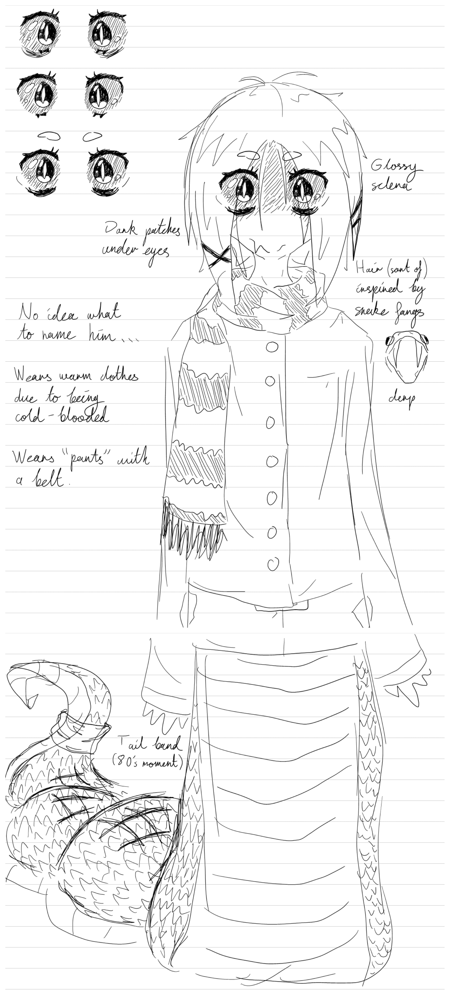
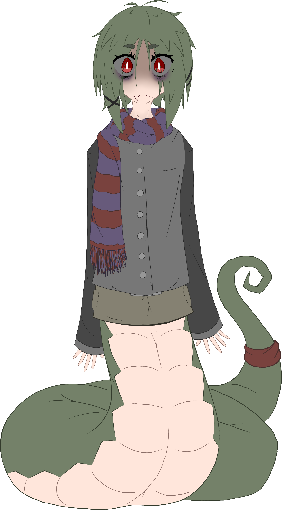

Instead of going down the 3D route, I ended up deciding to try to do a 2D model with Live2D. I ended up getting it into Live2D and started rigging it, but I wasn't very happy with it. I want to touch it up or redo it later this year, since it looks kind of flat and the face didn't turn out so well in Krita; the original sketch I did (when I should have been doing tutorial problems) somehow looks better.
 